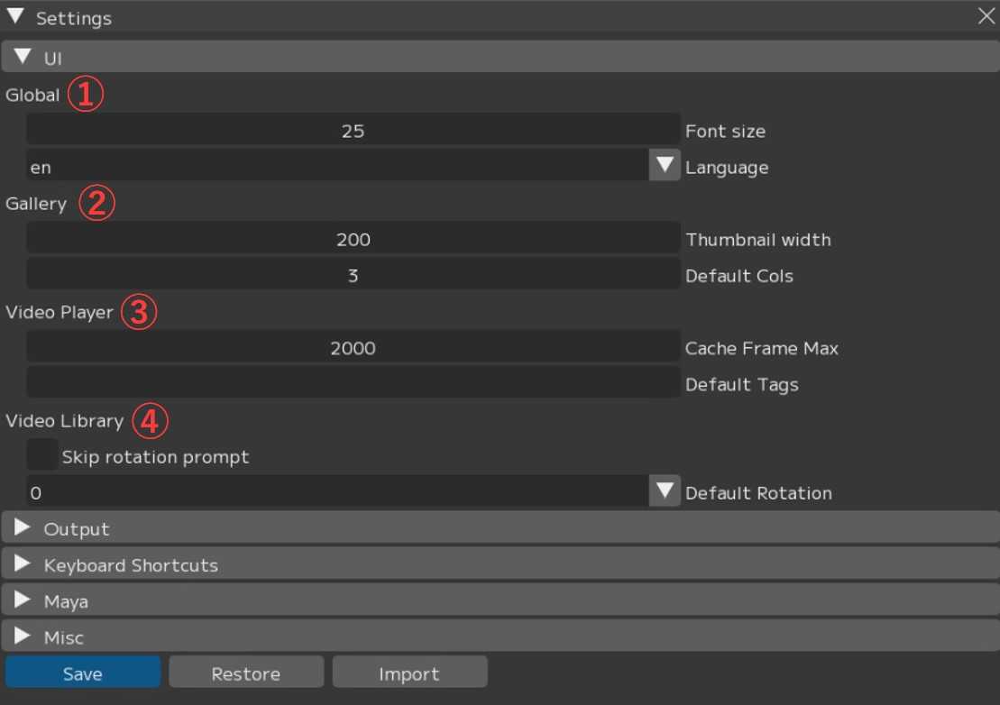
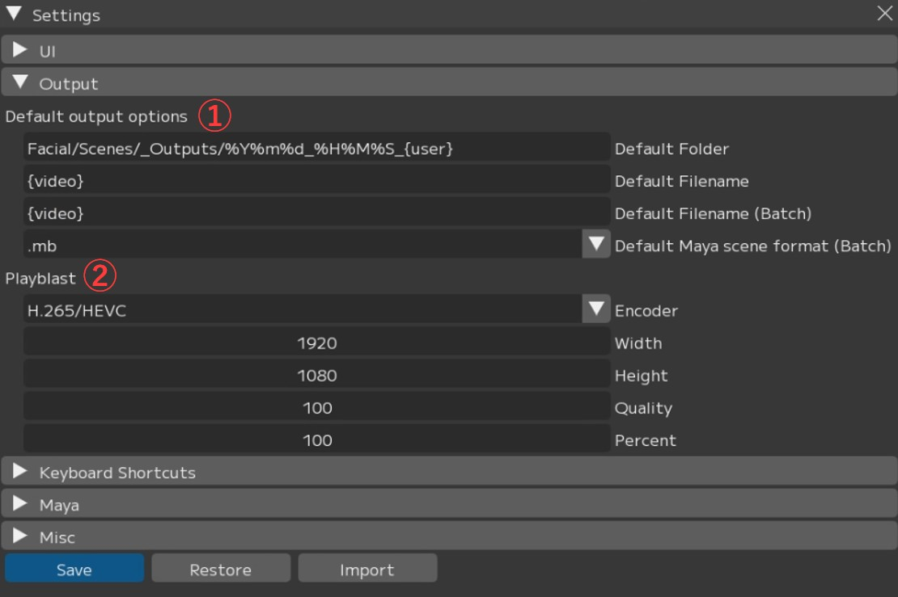
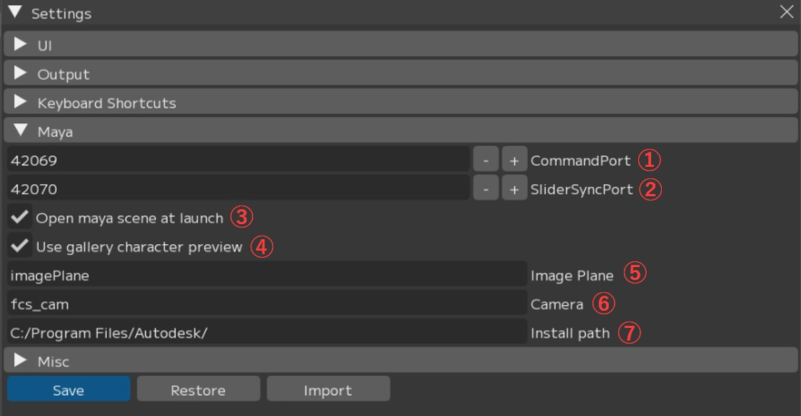

Preferences (File ▶ Settings Window)
This section describes the settings menu in the File menu for configuring FCS global behavior, path settings, and detailed customization.

[Save]: Save settings. * Restart FCS after saving for the settings to take effect.
[Restore]: Reset settings to default and restart FCS
[import]: Import settings from another version, etc., and restart FCS.
Load the my_conf.yaml file located at C:\Users[username].fcs\Cortado[FCS version].
{kind=link}

① Global
② Gallery
- Thumbnail width: Width of profile images displayed in the gallery
- Default Cols: Default number of columns in the gallery
③ Video Player
- Cache Frame Max: Maximum number of frames to cache in memory
- Default Tags: Tag names assigned by default
Note
The higher the Cache Frame Max value, the more memory is consumed.
As a guideline, approximately 64 GB is used per 10,000 frames at Full HD resolution.
Setting -1 saves cache without limit.
Use this setting only when sufficient memory is available.
④ Video Library
- Cache Frame Max: Whether to display the rotation settings screen when importing a video
- Default Rotation: Default rotation value when importing a video (0 = no rotation)
You can change the default settings for animation output and playblast output.
{kind=link}

① Default output options: Default settings for animation output
- Default Folder: Default output folder
- Default Filename: Default file name
- Default Filename(Batch): Default file name for batch output
- Default Maya scene format(Batch): Default Maya save format
② Playblast: Default settings for playblast output
- Encoder: Playblast encoding settings
- Width: Playblast width
- Height: Playblast height
- Quality: Playblast quality
- Percent: Playblast resolution
You can configure keyboard shortcuts for use with FCS.
Up to 3 buttons can be registered for simultaneous key presses: 1 key + 2 modifier keys.

① Timeline
- Next Frame: Go to the next frame
- Previous Frame: Go to the previous frame
- Next ROM: Go to the next profile
- Previous ROM: Go to the previous profile
- Play/Pause Timeline: Play / pause the timeline
- Add current frame to ROM: Add the current frame as a profile
- Open profile on timeline: Open the video of the currently selected profile
② Editor
- Save ROM edits: Save profile edits
- From Maya: Load facial expression values from Maya
- To Maya: Send facial expression values to Maya
③ Layout
- Active Single: Switch to Single preset layout
- Active Double: Switch to Double preset layout
- Active Triple: Switch to Triple preset layout
These are settings related to the connection with Maya.
{kind=link}

① CommandPort: Command port used for connecting to Maya
② SliderSyncPort: Command port for retrieving Maya’s timeline
③ Open maya scene at launch: Whether to also open the registered Maya scene when launching Maya
④ Use gallery character preview: Enable the character display toggle function in the Gallery window
⑤ Image Plane: Image plane name. * No restart required
⑥ Camera: Camera name. * No restart required
⑦ Install path: Maya installation path. * No restart required

① Backend: Select the data processing method (cpu/cuda)
② Update Channel: Notification settings for FCS updates
- All: Receive update notifications for both major and minor versions
- Patch: Receive notifications for minor version updates only
- None: Do not receive version update notifications
③ Use Beta: Configure whether to use beta features
Menu Descriptions - Table of Contents
- File: Session file management and basic operations
- Settings: File/Settings - Global environment settings and behavior options for FCS
- Window: Display and operation guide for each window
- Maya: Launching and linking with Maya
- View: Adjusting the workspace layout
- Explore: Browsing files in Windows Explorer from FCS
- Info: Version information and more